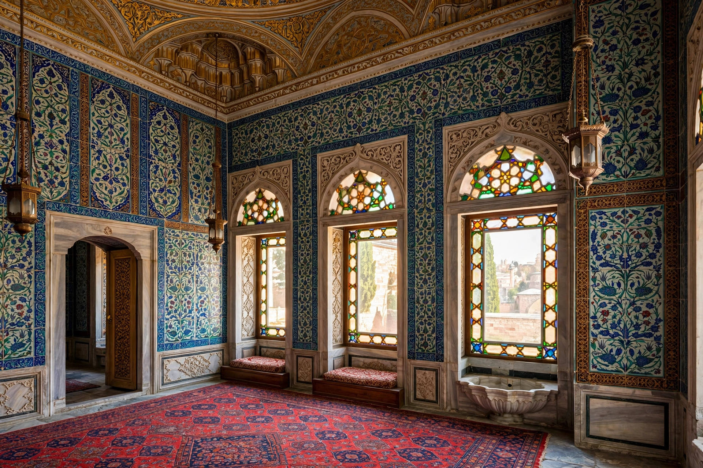

Ottoman Imperial Harem
| Imperial Harem | |
|---|---|
| Location | Topkapı Palace, Istanbul |
| Head | Valide sultan (queen mother) |
| Active | 15th century – 1909 (dissolved with the palace household) |

The Imperial Harem (Turkish: Harem-i Hümâyûn) of the Ottoman Empire was the court of the sultan's household, comprising his mother, wives and concubines, children, and the female servants and eunuchs who attended them. Located in a secluded wing of Topkapı Palace in Istanbul, the harem was both a domestic space and, especially in the 16th and 17th centuries, a significant centre of political influence — a period sometimes called the Sultanate of Women.
Hierarchy
At the apex stood the valide sultan, the sultan's mother, who managed the harem's finances and often acted as regent. Below her ranked the haseki sultan (chief consort), other consorts (kadıns and ikbals), and the cariyes — slave women, many from the Caucasus, Circassia or the Balkans, who were educated in music, embroidery, etiquette and Islam in the hope of attracting the sultan's favour. The household was guarded and administered in part by black eunuchs under the Kızlar Ağası (Chief Black Eunuch), one of the most powerful officials of the palace.
Political influence
Figures such as Hürrem Sultan, consort of Suleiman the Magnificent, and Kösem Sultan, who served as regent for two sultans, exercised real power through patronage, correspondence with foreign rulers and control of appointments. This influence declined as sultans' households changed in the 18th and 19th centuries.
Daily life and decline
The harem contained hundreds of rooms — apartments, baths, mosques, a hospital and courtyards — around the Courtyard of the Valide Sultan. Women who left the harem were typically married to officials. After the court moved to Dolmabahçe Palace in the 1850s the Topkapı harem was largely abandoned, and the institution ended with the deposition of Abdülhamid II in 1909.
See also: Sultanate of Women, Valide sultan, Haseki sultan.